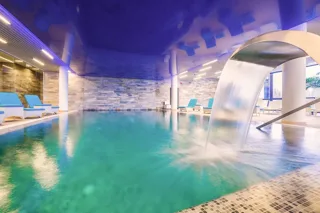
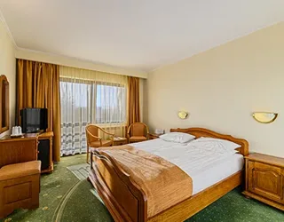
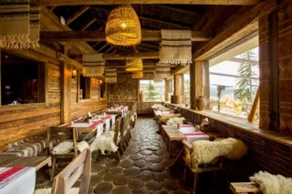
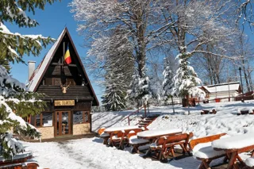
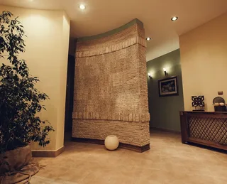
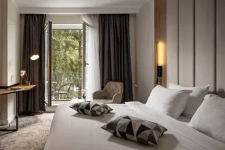
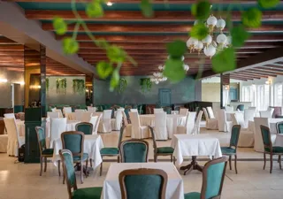
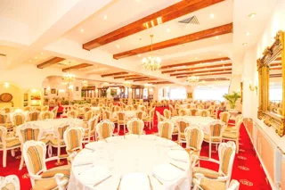
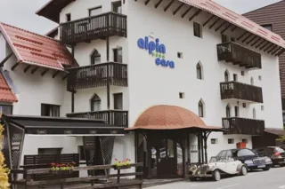

Locații de nuntă în Poiana Brașov
- locații în director
- 19
- cu cazare în registrul SITUR
- 9
- medie ponderată Google
- 4,5 / 5
- evaluări Google
- 29.199
Cum alegi o locație în Poiana Brașov
În Poiana Brașov poți începe comparația cu Hotel Simona Halep - Poiana Brasov (local pentru evenimente), Elexus Apartments Poiana Brasov (apartament în regim hotelier), Elexus Ballroom (local pentru evenimente). Aceste proprietăți apar în primele poziții când luăm în calcul împreună nota și numărul de evaluări Google. Salvează adresele care vă interesează pentru a le așeza apoi alături în fișa de comparare a ofertelor.
Pentru partea de afară, avem o descriere a spațiului folosit la evenimente la Ana Hotels Sport Poiana Brașov — Ceremonie în aer liber · Ana Hotels Bradul Poiana Brașov — Nuntă pe terasa cu vedere la munte. La vizionare, cere schița pentru numărul vostru de persoane, inclusiv locul unde vor sta muzicienii și pe unde intră invitații.
Dacă vin rude de departe, Hotel Simona Halep - Poiana Brasov are o unitate de cazare asociată în registrul SITUR. Înregistrarea pentru Simona Halep cuprinde 54 de locuri de dormit în 27 de spații de cazare. Întreabă câte camere pot fi păstrate pentru aceeași noapte înainte să trimiți invitaților detaliile de rezervare.
Locații pentru vizionare
Ordinea ține cont de nota Google și de numărul evaluărilor. Cum calculăm ordinea

Fotografie a locației · Sursa fotografiei Poiana Brașov · Local pentru evenimente
Hotel Simona Halep - Poiana Brasov
Un grup venit cu o sărbătorită la hotelul din Poiana Brașov amintește atenția acordată acesteia de către personal și timpul petrecut în zona spa.
Strada Poiana Ruia 1, 500001 Poiana Brașov+40 730 124 125
Fotografie a locației · Sursa fotografiei Poiana Brașov · Apartament în regim hotelier
Elexus Apartments Poiana Brasov
Elexus Apartments Poiana Brasov, Brașov. Dacă rezervi mai multe apartamente pentru familie, cere descrierea fiecăruia în confirmare.
Strada Doinașului 15, 500001 Poiana Brașov+40 752 050 440
Fotografie a locației · Sursa fotografiei Poiana Brașov · Local pentru evenimente
Elexus Ballroom
La Elexus Ballroom, un cuplu descrie propria nuntă ca restrânsă și spune că a primit atunci un apartament și șampanie din partea locației.
Strada Doinașului 15, 500001 Poiana Brașov+40 747 148 714
Fotografie a locației · Sursa fotografiei Poiana Brașov · Restaurant
Hotel Casa Viorel
Hotel cu restaurant, foișor și grădină spre pădure în Poiana Brașov, cu evenimente private pe site; recenzii mixte despre camere și servire.
Strada Poiana lui Stechil 20, 500001 Poiana Brașov+40 730 084 085
Fotografie a locației · Sursa fotografiei Poiana Brașov · Restaurant
Stâna Turistică Sergiana
Stâna Turistică Sergiana. Un grup de patruzeci de persoane a găsit la Stâna Turistică un foc aprins afară și a urmărit apusul printre copaci.
Strada Păstorului 5, 500001 Poiana Brașov+40 726 366 147
Fotografie a locației · Sursa fotografiei Poiana Brașov · Hotel
Hotel Escalade
Hotel Escalade, Poiana. Un vizitator la Escalade precizează că a venit numai la restaurant și a comandat burgeri de vită și salată Caesar.
Strada Poiana Soarelui 160, 500001 Poiana Brașov+40 752 333 645
Fotografie a locației · Sursa fotografiei Poiana Brașov · Hotel
Casa Vlasin Pensiune&Restaurant
Pensiune cu restaurant în Poiana Brașov, lăudată pentru ciorba ardelenească și papanași; 4,6 din 1.242 de evaluări, cu critici la curățenie.
Strada Poiana Soarelui 221, 500001 Poiana Brașov+40 730 015 560
Hartă ilustrată Poiana Brașov · Hotel
Swissôtel Poiana Brasov
Swissôtel Poiana Brasov, Brașov. Un oaspete care a stat la Swissôtel în septembrie relatează că parcarea se achita separat de noaptea de cazare.
Drumul Sulinar 9, 500001 Poiana Brașov+40 368 520 500
Fotografie a locației · Sursa fotografiei Poiana Brașov · Local pentru evenimente
K2 Alpin - Centru de Evenimente Private si Corporate
Un participant la o conferință găzduită de K2 Alpin descrie o neînțelegere privind rândurile rezervate lângă scenă.
Strada Poiana Ursului, 500001 Poiana Brașov+40 722 362 074
Hartă ilustrată Poiana Brașov · Hotel
Ana Hotels Sport Poiana Brașov
Hotel lângă pârtie în Poiana Brașov, cu ofertă de nuntă și ceremonie în aer liber la baza muntelui; ce laudă și ce reproșează oaspeții.
Strada Valea Dragă Poiana, 500001 Poiana Brașov+40 268 407 330
Fotografie a locației · Sursa fotografiei Poiana Brașov · Centru de echitație
Centrul de Echitație Poiana Brașov
Centru de echitație cu cazare și restaurant în Poiana Brașov: plimbări călare, foc de tabără pentru grupuri, 4,5 din 1.125 de evaluări.
Strada Mioriței, Brașov+40 728 026 952
Fotografie a locației · Sursa fotografiei Poiana Brașov · Hotel
Denisa
Denisa, Brașov. Dacă vă pregătiți pentru nuntă în Brașov, solicitați chiar fotografia camerei pe care urmează să o primiți.
Strada Poiana Soarelui, 500001 Poiana Brașov+40 268 262 213
Hartă ilustrată Poiana Brașov · Spa
Ana Spa Poiana Brașov
Ana Spa Poiana Brașov, Brașov. În prezentarea Ana Spa se vede un interior cu grinzi aparente, fotolii și o masă joasă.
Strada Valea Dragă Poiana, 500001 Poiana Brașov+40 268 407 330
Hartă ilustrată Poiana Brașov · Restaurant
Ana Hotels Bradul Poiana Brașov
Sala Tisa la Ana Hotels Bradul este prezentată pentru nunți de până la 250 de invitați. Aflați cum se pot lega terasa, cocktailul și cazarea.
Strada Valea Dragă 5, 500001 Poiana Brașov+40 268 407 330
Fotografie a locației · Sursa fotografiei Poiana Brașov · Hotel
Hotel Soimul
Hotel Soimul, Brașov. Un oaspete de la Șoimul apreciază curățenia și mărimea camerei, dar își exprimă dezamăgirea în privința micului dejun.
Valea Sticlăriei, 500001 Poiana Brașov
Fotografie a locației · Sursa fotografiei Poiana Brașov · Local pentru evenimente
Monterai
La Monterai, două prezentări ale terasei dau cifre diferite: 60 de locuri pe pagina restaurantului și 120 în prezentarea pentru evenimente.
Vila 0, Strada Poiana Soarelui 2, 500001 Poiana Brașov+40 268 262 335
Fotografie a locației · Sursa fotografiei Poiana Brașov · Hotel
Aurelius Imparatul Romanilor
Aurelius Imparatul Romanilor. La Aurelius, o familie cu un copil mic a primit la sosire o cameră mai spațioasă decât cea rezervată, orientată spre lac și munți.
Strada Poiana lui Neagoe 15, 500001 Poiana Brașov+40 268 262 166
Fotografie a locației · Sursa fotografiei Poiana Brașov · Hotel
Alpin Resort Hotel
Hotel cu patru restaurante, spa și piscină interioară în Poiana Brașov: ce laudă oaspeții, ce reclamă și ce să cereți în scris pentru nuntă.
Strada Poiana Doamnei 9, 500001 Poiana Brașov+40 268 262 343
Fotografie a locației · Sursa fotografiei Poiana Brașov · Restaurant cu specific european modern
Noir Poiana Brasov
Noir Poiana Brasov, Brașov. Pentru o recepție în Poiana Brașov, puteți separa alegerea decorului de alegerea meniului.
Strada Doinașului, 500001 Poiana Brașov+40 752 050 442
Întrebări despre locațiile din Poiana Brașov
Unde pot dormi invitații în Poiana Brașov?
În registrul de cazare SITUR găsim Hotel Simona Halep - Poiana Brasov (54 de locuri de cazare), Hotel Casa Viorel (64 de locuri de cazare), Casa Vlasin Pensiune&Restaurant (32 de locuri de cazare). Verifică ce camere sunt libere pentru noaptea evenimentului.
Ce spații sunt documentate pentru evenimente în aer liber în Poiana Brașov?
Ana Hotels Sport Poiana Brașov — Ceremonie în aer liber. Ana Hotels Bradul Poiana Brașov — Nuntă pe terasa cu vedere la munte.
Care locație din Poiana Brașov are cele mai multe evaluări Google?
Stâna Turistică Sergiana are 6.462 de evaluări în profilul Google folosit la documentare. Evaluările acoperă și alte experiențe la proprietate, inclusiv vizitele fără eveniment.
Unde apare o intrare accesibilă în Poiana Brașov?
Profilurile Google indică o intrare accesibilă la Elexus Ballroom, Stâna Turistică Sergiana, K2 Alpin - Centru de Evenimente Private si Corporate. Pentru o cununie în exterior, cere detalii despre traseul dintre intrare și zona cu scaune.
Vizionări în apropiere
- Brașov · 33 de locații. Între Monterai și Naturalia Inn sunt 3,5 km în linie dreaptă.
- Cristian · 1 locație. Între Stâna Turistică Sergiana și Conacul Ambient sunt 4,9 km în linie dreaptă.
- Ghimbav · 3 locații. Între Stâna Turistică Sergiana și Kron Event Center sunt 5,1 km în linie dreaptă.